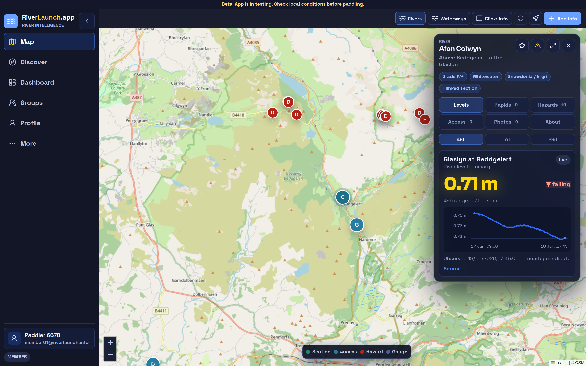
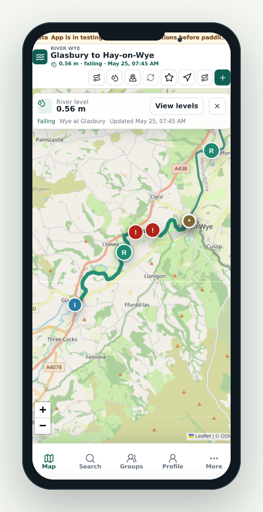
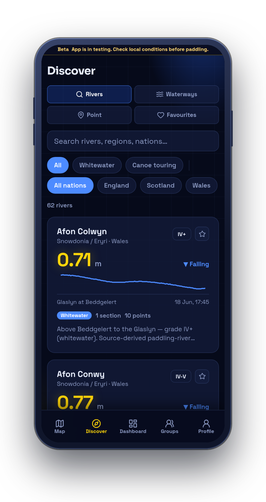
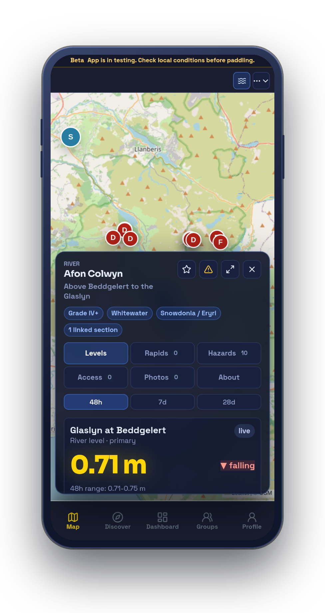
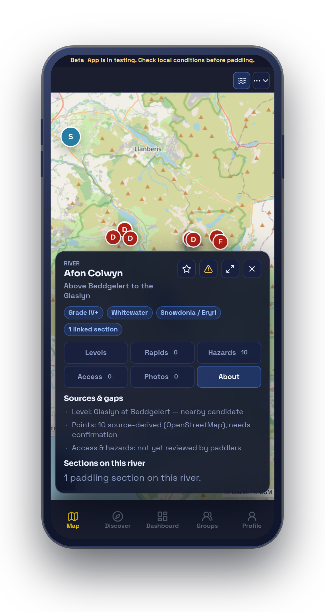

Browse by map
Routes, gauges, access points, hazards, and photos all share one map, so you can size up a river at a glance.
Product
Browse the map, open any river, read today's levels, and see the access, hazards, and photos other paddlers have added — all in one place.



Routes, gauges, access points, hazards, and photos all share one map, so you can size up a river at a glance.
Put-in, take-out, distance, difficulty, recent reports, and photos — each with the date it was last updated.
Every contribution is dated, pinned to a place, and open for other paddlers to confirm or dispute.
Mobile preview
These phone-framed screenshots show the authenticated preview app on a mobile form factor — the map, the Discover river list, live level context, and the data sources behind each river.




Your profile
Beyond the map, RiverLaunch keeps the personal records that make planning easier — your gear, your tickets, and every river you've run.
A private inventory of your boats and safety kit, with replace-by reminders so nothing important ages out unnoticed.
Keep your qualifications, rescue training, and experience together, with a nudge before anything expires. Self-declared — a personal record, not a verified certification.
Log every river you run with the level, your craft, and who you went with, and watch your river tally grow.
Your profile also keeps the hazards, access notes, and photos you've contributed, a private emergency contact, and an offline outbox that syncs your updates as soon as you're back in signal.
Groups
Set up a club, a trip crew, or just your regular paddling friends — then plan the day together, from picking the river to sorting the shuttle.
Create clubs, trip crews, and friend groups, invite members, and manage who can organise.
Pick the river, set a date and a meeting point, and share the shuttle, parking, and food plans in advance.
RSVP going, maybe, or can't, add an availability note, and check in on the day so everyone knows who's on the water.
Choose to share your emergency contact with the trip leader for that session only — it closes automatically when the day ends.
Preview only
Try RiverLaunch.app for yourself.
This is the preview environment for the product shown in these screenshots. Content may be prototype content or work in progress.